Grade 4
56 no-prep resources for grade 4 with answer keys: reading comprehension passages, reading trails, and math centers.
56 resources
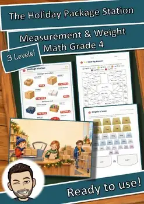
Holiday Package Station Weight Role Play | Christmas Math Center Grade 4
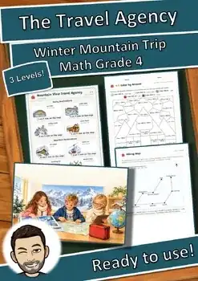
The Travel Agency Map Scale Role Play | Winter Math Center Grade 4
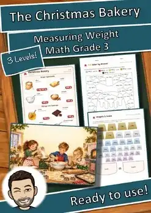
The Christmas Bakery Weight Role Play | Christmas Math Center Grade 3
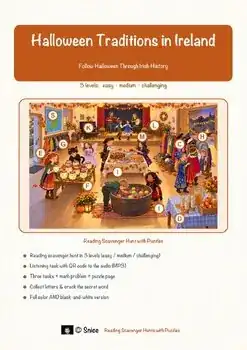
Irish Halloween Reading Comprehension Passages | History Scavenger Hunt 3-4
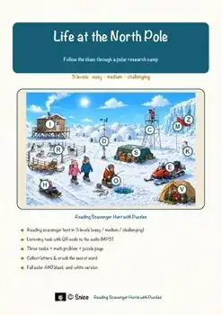
North Pole Reading Comprehension Passages | Science Scavenger Hunt 3-4
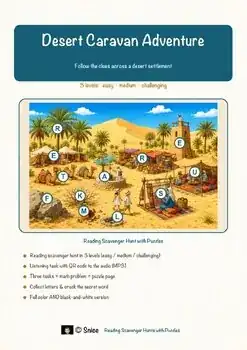
Desert Reading Comprehension Passages | Science Scavenger Hunt 3-4
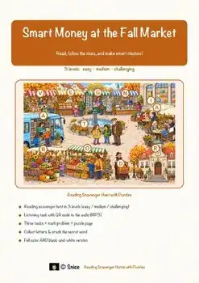
Money Reading Comprehension Passages | Economics Scavenger Hunt 3-4
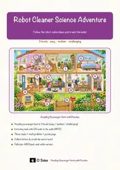
Robot Cleaner Reading Comprehension Passages | Science Scavenger Hunt 3-4
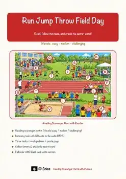
Field Day Reading Comprehension Passages | PE Scavenger Hunt 3-4
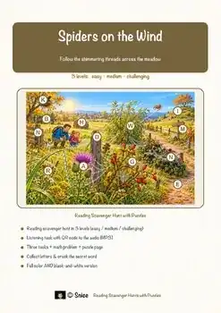
Spiders on the Wind Reading Passages | Science Scavenger Hunt 3-4
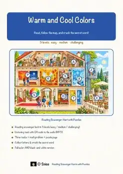
Warm and Cool Colors Reading Comprehension Passages | Art Scavenger Hunt 3-4
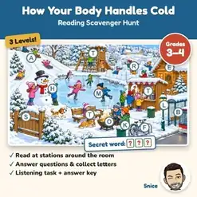
Body in Cold Reading Comprehension Passages | Health Scavenger Hunt 3-4
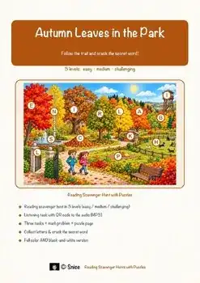
Autumn Leaves Reading Comprehension | Science Scavenger Hunt 3-4
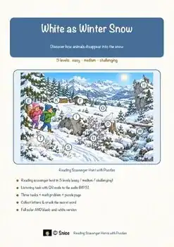
Winter Wildlife Reading Comprehension Passages | Science Scavenger Hunt 3-4
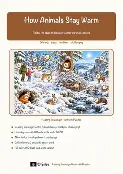
Animal Adaptations Reading Comprehension Passages | Science Scavenger Hunt 3-4
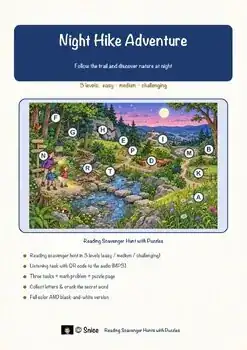
Night Hike Reading Comprehension Passages | Science Scavenger Hunt 3-4
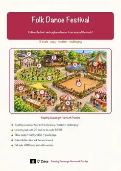
Folk Dance Reading Comprehension Passages | Music Scavenger Hunt 3-4
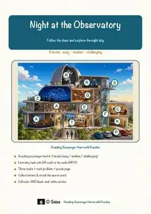
Observatory Reading Comprehension Passages | Science Scavenger Hunt 3-4
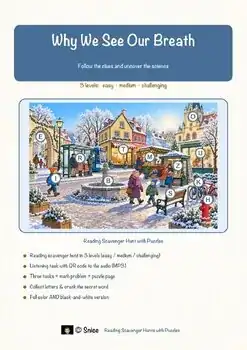
Breath Reading Comprehension Passages | Science Scavenger Hunt 3-4
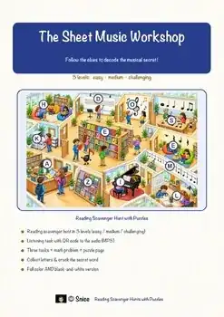
Sheet Music Reading Comprehension Passages | Music Scavenger Hunt 3-4
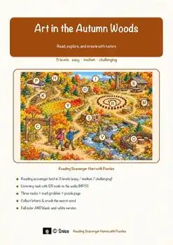
Land Art Reading Comprehension Passages | Visual Arts Scavenger Hunt 3-4
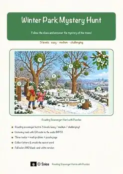
Winter Plants Reading Comprehension Passages | Science Scavenger Hunt 3-4
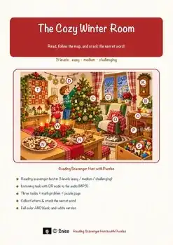
The Cozy Winter Room Reading Comprehension | Winter Scavenger Hunt 3-4
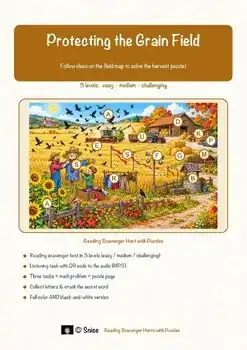
Grain Field Reading Comprehension Passages | Autumn Scavenger Hunt 3-4
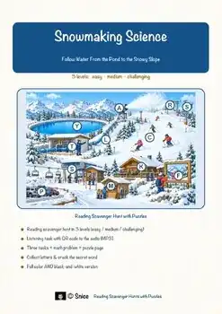
Snowmaking Science Reading Comprehension Passages | Science Scavenger Hunt 3-4
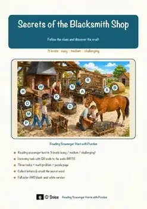
Blacksmith Reading Comprehension Passages | Engineering Scavenger Hunt 3-4
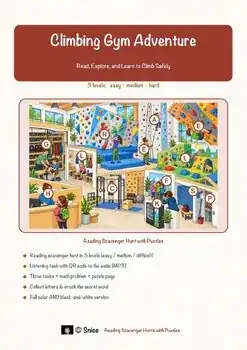
Climbing Reading Comprehension Passages | PE Scavenger Hunt 3-4
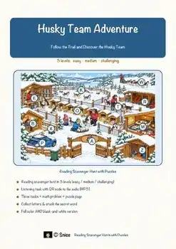
Husky Reading Comprehension Passages | Science Scavenger Hunt 3-4
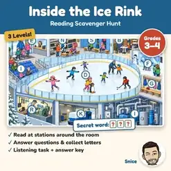
Ice Rink Reading Comprehension Passages | Science Scavenger Hunt 3-4
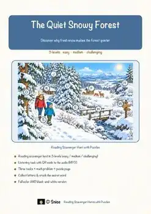
Winter Sound Reading Comprehension Passages | Science Scavenger Hunt 3-4
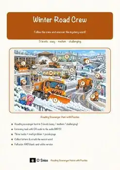
Winter Road Crew Reading Comprehension Passages | Science Scavenger Hunt 3-4
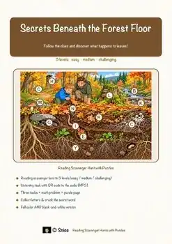
Secrets Beneath Forest Floor Passages | Reading Scavenger Hunt 3-4
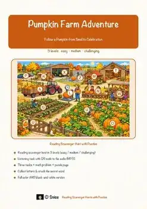
Pumpkin Farm Reading Comprehension Passages | Science Scavenger Hunt 3-4
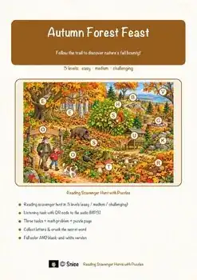
Autumn Forest Reading Comprehension Passages | Science Scavenger Hunt 3-4
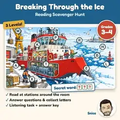
Icebreakers Reading Comprehension Passages | Science Scavenger Hunt 3-4
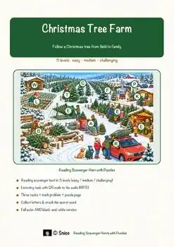
Christmas Tree Reading Comprehension Passages | Winter Scavenger Hunt 3-4
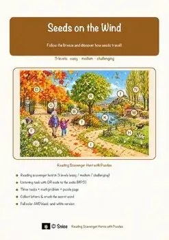
Seed Dispersal Reading Comprehension Passages | Science Scavenger Hunt 3-4
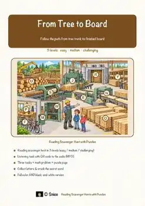
Sawmill Reading Comprehension Passages | Science Scavenger Hunt 3-4
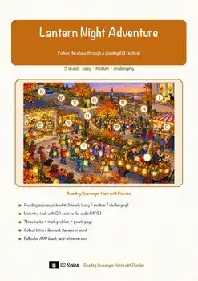
Lantern Night Reading Comprehension Passages | Autumn Scavenger Hunt 3-4
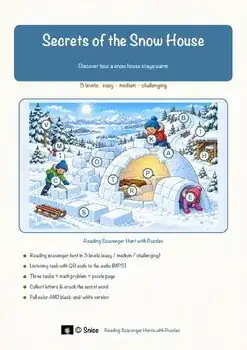
Igloo Reading Comprehension Passages | Science Scavenger Hunt 3-4
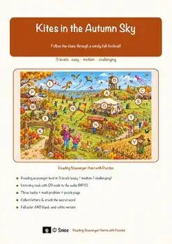
Kites & Wind Reading Comprehension Passages | Science Scavenger Hunt 3-4
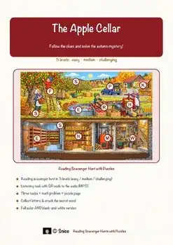
Apple Cellar Reading Comprehension Passages | Autumn Scavenger Hunt 3-4
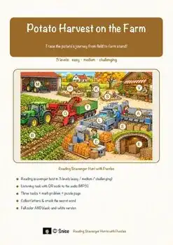
Potato Harvest Reading Comprehension Passages | Science Scavenger Hunt 3-4
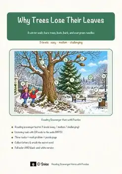
Fall & Winter Reading Comprehension Passages | Trees Science Scavenger Hunt
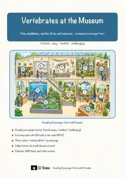
Vertebrates Reading Scavenger Hunt | Animal Groups Science Escape Activity
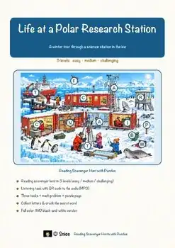
Polar Research Station Reading Scavenger Hunt | Winter Science Escape Activity
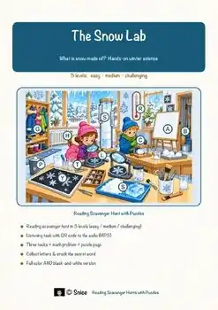
Snow Science Reading Scavenger Hunt | Winter Escape Activity Grades 3-4
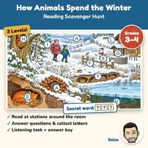
Animals in Winter Reading Scavenger Hunt | Hibernation Science Escape Activity
No resources found – try a different search term or filter.